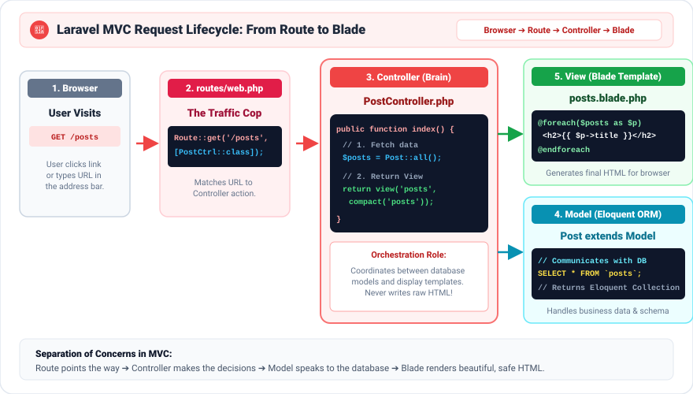

Welcome to Laravel! 🎨
The PHP framework for web artisans — your toolkit for building real web apps!
What is Laravel?
You already know PHP — that's amazing! Now imagine instead of writing every single feature from scratch, someone already built the hardest parts for you. That's Laravel!
Laravel is like a super-powered toolkit. Instead of building every tool yourself, Laravel gives you everything ready-made: login systems, databases, routing — all built in! You focus on your app's unique ideas, and Laravel handles the boring, repetitive stuff.
Plain PHP
Write everything yourself — database connections, security checks, URL routing. Hundreds of lines just to get started.
Laravel
Everything is ready. Security, routing, database, emails, logins — all included. You build features, not infrastructure!
What is a Framework? 🏗️
A framework is a collection of pre-written code that gives your app a solid foundation. Think of building a house — you don't pour the concrete yourself. A framework gives you the foundation already laid!
Saves Time ⏱️
Common features like login, password hashing, and email sending are already built.
Stays Secure 🔒
Laravel gives you tools that help block three common attacks:
- SQL injection: someone types database commands into a form to read or change your data.
- XSS (cross-site scripting): someone hides a script in a page so it runs in other visitors' browsers.
- CSRF (cross-site request forgery): another website tricks your browser into sending a form you did not mean to send.
Laravel helps protect you when you use its tools: Eloquent for the database, Blade's {{ }} for showing data, and @csrf in forms. It cannot protect code that skips these tools. You will meet all three later in this course.
Stays Organized 📁
Laravel has a strict folder structure that keeps your code clean and easy to find — even in large teams!
Used Everywhere 🌍
Many professional developers around the world use Laravel. It is one of the most popular PHP frameworks.
The Most Important Concept: MVC 🧩
Laravel is built around a design pattern called MVC — Model, View, Controller. This is the single most important concept to understand. Once you get this, everything else makes sense!
Model
The data layer. Models talk to the database. They know how to find, save, update, and delete data. Example: a Student model talks to the students table.
View
What the user sees. Views are the HTML pages — but powered by Blade templates. They display information beautifully without doing any database logic.
Controller
The brain connecting them. Controllers receive requests, ask the Model for data, and pass that data to the View. They are the manager of the whole operation!
How a Request Flows Through MVC

When a user visits a page on your Laravel app, here's exactly what happens, step by step:
Laravel's Folder Structure 📂
When you create a Laravel project, it comes with many folders. Don't be scared — you only need to know the key ones to get started!
The heart of your application. Contains your Models (app/Models/) and Controllers (app/Http/Controllers/).
Where you define all your URLs. The main file is routes/web.php for web pages.
All your Blade template files (HTML pages) live here. They end in .blade.php.
Contains your migrations (database table blueprints) and seeders (sample data). Think of it as your database blueprint folder.
The environment configuration file. This is where you put your database username, password, and app settings. Never share this file publicly!
Artisan — Your Magic Wand ✨
Laravel comes with a powerful command-line tool called Artisan. You run Artisan commands in your terminal to do things like create files, run the server, and manage your database. It saves you enormous amounts of typing!
# Start the development server (visit http://localhost:8000)
php artisan serve
# List all available Artisan commands
php artisan list
# Create a new Controller class
php artisan make:controller StudentController
# Create a new Model class
php artisan make:model Student
# Create a database migration file
php artisan make:migration create_students_table
Notice the pattern? Most commands are php artisan make:something Name. Laravel does all the work of creating the file — you just fill in the logic!
Runs your app locally
Creates a Controller
Creates a Model
Creates a Migration
🏆 Practice: three levels
🟢 Level 1: Recall
Fill in the blanks: "In MVC, the ______ talks to the database. The ______ is the page the user sees. The ______ connects the two."
Show answer
🟡 Level 2: Put the steps in order
A visitor opens /books on a school library app. Put these steps in the right order:
- The Model fetches the books from the database.
- The visitor types
/booksin the browser. - The visitor sees the finished HTML page.
- The Router matches
/booksto a Controller. - The Controller sends the books to the View.
- The Controller asks the Model for the books.
Show answer
🔴 Level 3: Challenge
Laravel cannot run inside this web page, so build this on your own computer with XAMPP. Create the start of a school library app.
- Open a terminal. Type
php -vand thencomposer -V. Composer is a tool that downloads PHP packages, like Laravel. If the second command fails, install Composer from getcomposer.org. - Go to your XAMPP web folder:
cd C:\xampp\htdocs. - Use Composer to create a new Laravel project called
school-library. - Go into the new folder. Start the development server with Artisan.
- Open
http://localhost:8000. Check that you see the Laravel welcome page. - Stop the server with Ctrl + C. Use Artisan to make a
Bookmodel and aBookController. - Find both new files. Write down the folder each one is in.
Show one possible answer
cd C:\xampp\htdocs
composer create-project laravel/laravel school-library
cd school-library
php artisan serve
# after stopping the server:
php artisan make:model Book
php artisan make:controller BookControllerThe model is in app/Models/Book.php. The controller is in app/Http/Controllers/BookController.php. If Composer says your PHP version is too old, update XAMPP and try again.
Quick Knowledge Check! 🧪
Let's see what you've learned. Pick the best answer for each question.